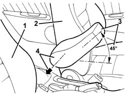
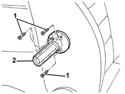

7045B18 front seat arm rest
- Path
- Procedures > 70 FITTINGS > 7045 FRONT SEATS > 7045B front seat head restraint/arm rest > 7045B18 front seat arm rest
- Kind
- repair procedure (removal / refitting; the operation number is the code)
- Applies to
- all engines; all production periods
- Interactive page
- https://sloeber94.github.io/elrnDB-a156/en/#/3238897
Applies to: all engines; all production periods
 Removing
Removing
 Refitting
Refitting1. Fully retract the right front seat.
2. Move the left front seat completely forwards and place the backrest in a vertical position.
3. Rotate the armrest to around 45 degrees.
4. Pull the armrest in the direction of the arrow and remove it.

Applies to: all engines; all production periods
1. If necessary, undo the armrest support bolts.
2. Recover the armrest support.

Applies to: all engines; all production periods
Refitting
RemovingCheck that the armrest is not damaged.
If removed, position the armrest support and fix it using the bolts.
Place the armrest in its housing, engaging it with its retainers.
Check that the armrest is working properly.
Return the front seats to an intermediate position.